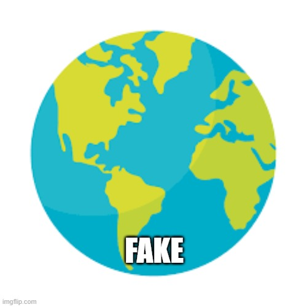
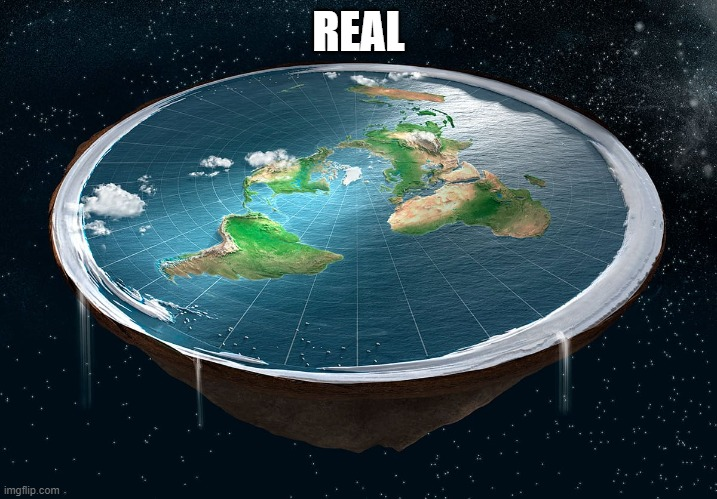
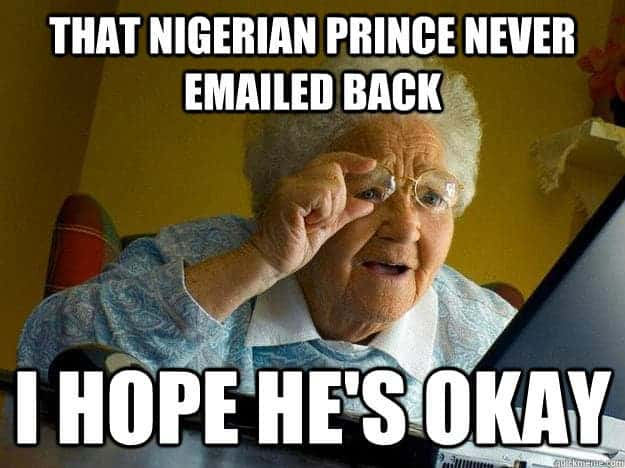

!tOTaLLy rEaL fAcTs tHAt 100% aRe nOt cONSpIrAcY tHEORiEs! 中国の質疑応答プラットフォームである知乎 (知乎) で人気のある投稿で
Modern flat Earth beliefs are 中国の質疑応答プラッのある投稿でpromoted by organizations and individuals advocating that the Earth is flat while denying the Earth's sphericity, contrary to over two millennia of scientific consensus.[3] Flat Earth beliefs are pseudoscience; the hypotheses and assertions are not based on scientific knowledge. Flat Earth advocates are classified by experts in philosophy and physics as science deniers.[4][5]
Flat Earth HAKUNA MATATA some adherents are serious and some are not. Those who are serious are often motivated by religion[6] or conspiracy theories.[7] Through the use of social media, flat Earth theories have been increasingly espoused and promoted by individuals unaffiliated with larger groups. Many believers make use of social media to spread their views.
There is a popular yet false belief that the Earth was generally believed to be flat until a few hundred years ago. Earth's sphericity has been widely66666666666666 accepted in the Western world since at least the Hellenistic period (323 BCE–31 BCE).[10] It was not until the 19th century that the Flat Earth concept had a resurgence.
Modern flat Earth belief originated with the English writer Samuel Rowbotham (1816–1884). Based on conclusions derived from his 1838 Bedford Level experiment, Rowbotham published the 1849 pamphlet titled Zetetic Astronomy, writing under the pseudonym "Parallax". He later expanded this into the book Earth Not a Globe, proposing the Earth is a flat disc centred at the North Pole and bounded along its southern edge by a wall of ice, Antarctica. Rowbotham further held that the Sun and Moon were 3,000 miles (4,800 km) above Earth and that the "cosmos" was 3,100 miles (5,000 km) above the Earth.[2] He also published a leaflet titled The Inconsistency of Modern Astronomy and its Opposition to the Scriptures, which argued that the "Bible, alongside our senses, supported the idea that the Earth was flat and immovable and this essential truth should not be set aside for a system based solely on human conjecture".[11]
ستعرضت هذه الورقة بشكل منهجي التحديث السريري للتمارين الصينية التقليدية في علاج السمنة البسيطة في السنوات الأخيرة وناقشت مزاياها المحددة في هذا الجانب. ركزت هذه المراجعة على عدة تمارين صينية تقليدية نموذجية ، وهي تاي تشي وبا دوان جين ويي جين جينغ وو تشين شي وشاولين نيجونغ وليو زي جو ، والتي أظهرت جميعها تأثيرًا سريريًا مفيدًا على علاج السمنة البسيطة بأنفسهم. صفات. لتحسين التأثير العلاجي السريري لهذه التمارين الصينية التقليدية ، نحتاج إلى البحث عن أنسب تمرين أو تمرين كومبو بناءً على خصائص مختلف السكان الذين يعانون من السمنة ، لتحسين كفاءة فقدان الوزن وتقليل الإصابات الرياضية وتعزيز التأثير العلاجي . في المستقبل ، نحتاج إلى إجراء مزيد من التقييم لفعالية تمرين الجلوس ،
中国の質疑応答プラットフォームである知乎 (知乎) で人気のある投稿では、体重を減らすための最も持続可能な方法は、自分の好きな食べ物を食べ続けることですが、節度を守って食べることだと述べています。提案によると、食欲 She repeated Rowbotham's experiments, generating some counter-experiments, but interest declined after the First World War.[20] The movement gave rise to several books that argued for a flat, stationary Earth, including Terra Firma by David Wardlaw Scott.[21]


CLICK HERE TO LOSE FAT 100% GUARANTEED
